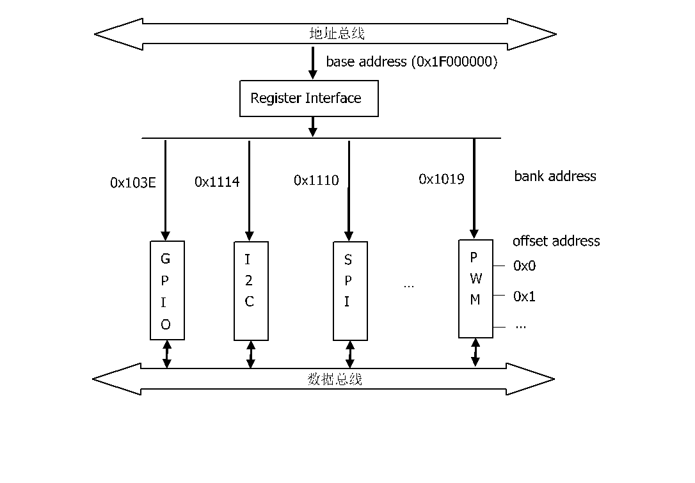
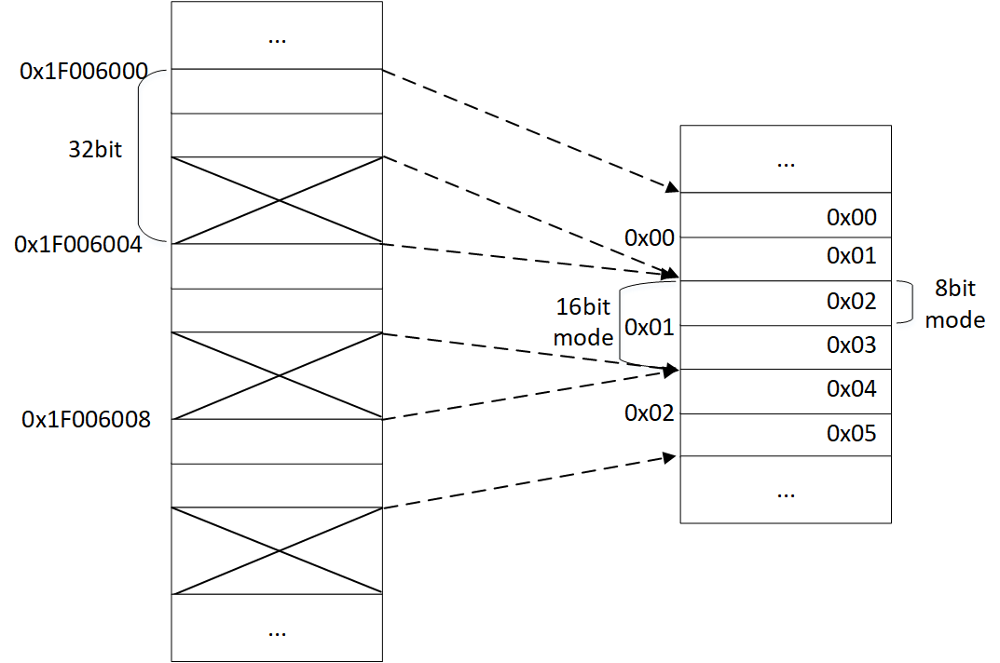
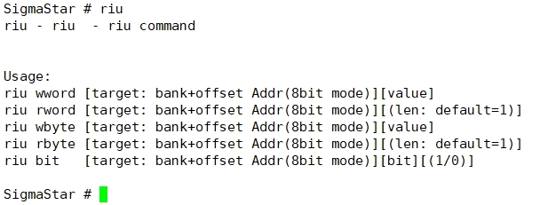
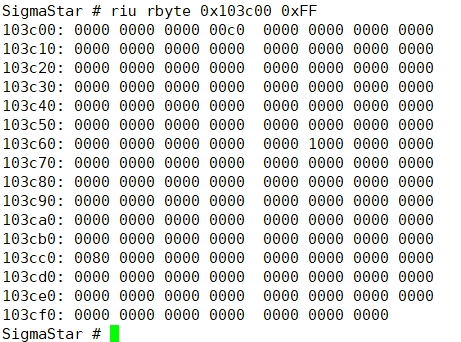
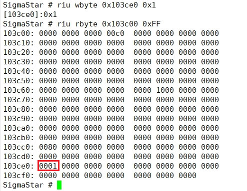
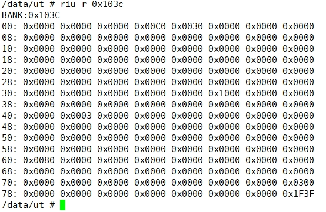
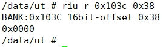
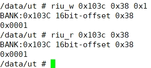

寄存器使用参考
1. 寄存器地址组成¶
1.1. 寄存器地址组成¶
-
base address：寄存器对应CPU总线基地址(物理地址：0x1F000000)
-
bank address：某一类功能外设（例如SPI，I2C）或者IP的寄存器会被划分到一个区域，这个区域被称为bank，对应的地址为bank address。
-
offset address：具体寄存器在bank内的寻址称为offset address。

1.2. 8bit模式和16bit模式¶
对于offset address来说，有8bit模式和16bit模式。8bit模式offset地址范围为0x00 ~ 0xFF。16bit模式offset地址范围为0x00 ~ 0x7F。8bit与16bit模式的offset address是2倍关系。例如：8bit模式的offset地址为0x34，对应的16bit模式的offset地址为0x1A。
为何会存在两种模式？其实是为了更方便操作寄存器，16bit模式一般用来直接操作16bit的寄存器，而8bit模式则用来操作16bit寄存器的高8位（8bit模式奇数地址）或者低8位（8bit模式偶数地址）。
下图比较直观地展示CPU总线寄存器地址以及寄存器8bit模式和16bit模式的差异。

2. 寄存器工具¶
2.1. UBOOT的寄存器工具¶
2.1.1. 配置
UBOOT的寄存器工具依赖于CONFIG_SSTAR_DRIVERS宏，这个宏在配置文件中默认已经打开。
2.1.2. riu命令
-
帮助
在UBOOT命令行输入
riu，会给出riu寄存器工具的使用方法。注意UBOOT下的riu工具的offset address是8bit模式。
-
读
读取寄存器最简单的方法可以通过
riu rbyte [target: bank+offset Addr(8bit mode)] 0xFF命令来读取整个bank，再去寻找需要的offset address的值。示例：读取bank address=0x103c的整个bank。

-
写
如果要写具体的寄存器，可以通过
riu wbyte [target: bank+offset Addr(8bit mode)] [value]命令来操作。示例：往bank address=0x103c，offset address=0xe0这个8bit寄存器写1。

2.2. Kernel的寄存器工具¶
Kernel下也有对应的寄存器工具，只不过Kernel下的寄存器工具的offset address是16bit模式。
2.2.1. riu_r
如果直接使用riu_r [bank address]命令，则会读取整个bank的寄存器值。
示例：读取bank address=0x103c的整个bank。

如果要读取某个offset address的寄存器值，可以通过riu_r [bank adress] [offset address]命令。
示例：读取bank address=0x103c，offset address=0x38的值。

2.2.2. riu_w
如果要修改某个寄存器的值，可以通过riu_w [bank addess] [offset address] [value]来操作。
示例：把bank address=0x103c，offset address=0x38的值改为0x1。

3. 寄存器地址¶
3.1. 寄存器表解析¶
下面以TIMER0寄存器表说明如何查看寄存器表格。
Bank=0x30：表示TIMER0寄存器的bank address=0x30。
Index 0x10：表示TIMER0寄存器16bit模式的offset address。
Index 0x003021：表示TIMER0寄存器8bit模式的offset address为0x21。
Table 1: TIMER0 Register (Bank = 30)
| Index (Absolute) | Mnemonic | Bit | Description | |
|---|---|---|---|---|
| 10h (003020h) | REG003020 | 7:0 | Default : 0x00 | Access : R/W |
| - | 7:2 | Reserved. | ||
| TIMER_TRIG | 1 | set: Enable timer counting one time (from 0 to max, then stop). clear: By reset itself OR set reg_timer_en. |
||
| TIMER_EN | 0 | set: Enable timer counting rolled (from 0 to max, then rolled). clear: By reset itself OR set reg_timer_trig. |
||
| 10h (003021h) | REG003021 | 7:0 | Default : 0x00 | Access : R/W |
| - | 7:1 | Reserved. | ||
| TIMER_INT_EN | 0 | set: Enable interrupt. clear: By reset itself. |
||
| 11h (003022h) | REG003022 | 7:0 | Default : 0x00 | Access : RO |
| - | 7:1 | Reserved. | ||
| TIMER_HIT | 0 | assert: When counter enabled and matches
reg_timer_max. deassert: By write 1 OR set reg_timer_en, reg_timer_once, reg_timer_max. |
||
| 11h (003023 h) | REG003023 | 7:0 | Default : 0xFF | Access : R/W |
| - | 7:0 | Reserved. | ||
3.2. 寄存器地址计算¶
使用寄存器地址，已知寄存器的bank和offset，如何计算它的CPU物理地址（这个地址是软件编程会直接使用到的地址）。
-
8bit模式公式
cpu phy addr = base addr + bank addr x 0x200 + offset addr x 2 - (offset & 1)
示例：
已知bank address=0x30, offset address = 0x2 cpu phy addr = 0x1F000000 + 0x30 x 0x200 + 0x2 x 2 - (0x2 & 1) cpu phy addr = 0x1F006004
-
16bit模式公式
cpu phy addr = base addr + bank addr x 0x200 + offset addr x 4
示例：
已知bank address=0x30, offset address = 0x1 cpu phy addr = 0x1F000000 + 0x30 x 0x200 + 0x1 x 4 cpu phy addr = 0x1F006004
对于UBOOT来说，physical address和virtual address是等同的，因此：
register cpu address = register cpu physical address
对于Kernel来说，由于开启了MMU，physical address和virtual address在设计上存在一个偏移值，因此：
register cpu address = register cpu physical address + MS_IO_OFFSET
注：MS_IO_OFFSET定义在./driver/sstar/include/ms_platform.h
最后，在代码里面访问寄存器的方法为：
-
8bit模式
(*(volatile u8*)(register cpu address))
-
16bit模式
(*(volatile u16*)(register cpu address))
3.3. 寄存器操作API¶
在UBOOT和Kernel的代码里面已经封装了一些操作寄存器的API，可以直接使用。这些API都是对前述的register cpu address地址操作的封装。
| API | Detail |
|---|---|
| INREG8(x) | [功能] 获取8bit寄存器值 [参数] x: register cpu address [返回] 8bit寄存器值 |
| OUTREG8(x, y) | [功能] 修改8bit寄存器值 [参数] x: register cpu address; y: 待写入寄存器的值 [返回] 无 |
| SETREG8(x, y) | [功能] 把8bit寄存器某些bit位置1 [参数] x: register cpu address; y: 指定的bit位 [返回] 无 |
| CLRREG8(x, y) | [功能] 把8bit寄存器某些bit位清零 [参数] x: register cpu address; y: 指定的bit位 [返回] 无 |
| INREGMSK8(x, y) | [功能] 按指定mask获取8bit寄存器某些bit位的值 [参数] x: register cpu address; y: 指定要获取的bit位 [返回] 8bit寄存器某些bit位的值 |
| OUTREGMSK8(x, y, z) | [功能] 清零8bit寄存器某些bit位，并重新设置这些bit位的值 [参数] x: register cpu address; y: 待写入到bit位的值; z: 指定的bit位 [返回] 无 |
| INREG16(x) | [功能] 获取16bit寄存器值 [参数] x: register cpu address [返回] 16bit寄存器值 |
| OUTREG16(x, y) | [功能] 修改16bit寄存器值 [参数] x: register cpu address; y: 待写入寄存器的值 [返回] 无 |
| SETREG16(x, y) | [功能] 把16bit寄存器某些bit位置1 [参数] x: register cpu address; y: 指定的bit位 [返回] 无 |
| CLRREG16(x, y) | [功能] 把16bit寄存器某些bit位清零 [参数] x: register cpu address; y: 指定的bit位 [返回] 无 |
| INREGMSK16(x, y) | [功能] 按指定mask获取16bit寄存器某些bit位的值 [参数] x: register cpu address; y: 指定要获取的bit位 [返回] 16bit寄存器某些bit位的值 |
| OUTREGMSK16(x, y, z) | [功能] 清零16bit寄存器某些bit位，并重新设置这些bit位的值 [参数] x: register cpu address; y: 待设置到bit位的值; z: 指定的bit位 [返回] 无 |